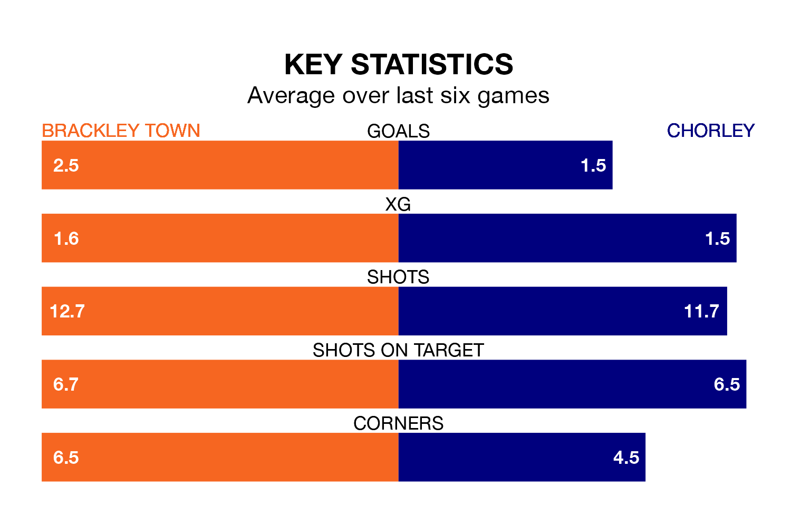

Two of the National League North's top sides face each other at St. James Park in Sunday's kick-off, when third-placed Brackley Town host fourth-placed Chorley.
Brackley have picked up 25 wins and 10 draws from 46 games so far this season, and sit two points above the visitors going into the 3pm match.
The Magpies, meanwhile, have won 25 and drawn eight, picking up 83 points.
With 81 goals in 46 games so far this season, Chorley are the league's second-highest scorers with 1.8 goals per game. And they are conceding fewer than average, letting in 50 goals at a rate of 1.1 per game.
Brackley are also above average scorers, with 1.4 goals per game, compared to a league average of 1.3. They have conceded 0.8 goals per game.
Town are in fantastic form in the National League North, with five wins and a draw from their last six games.
With three wins and a draw over that period, the Magpies' form is much worse – they have taken 10 points from 18, compared to the Saints' 16.
In the last 10 years, Brackley and Chorley have played each other on 17 occasions. Brackley won three of them, Chorley six, and they drew eight times.
On average, the Saints scored 0.7 goals and the Magpies 0.9 in those matches.
Their last meeting was on February 27, when Brackley won 1-0 at home.
Brackley's last match was on April 20, a 5-1 win against Blyth Spartans.
Chorley drew 0-0 with Curzon Ashton last time out, on Wednesday.
Updated: 07:59 (UTC), 26/04/24